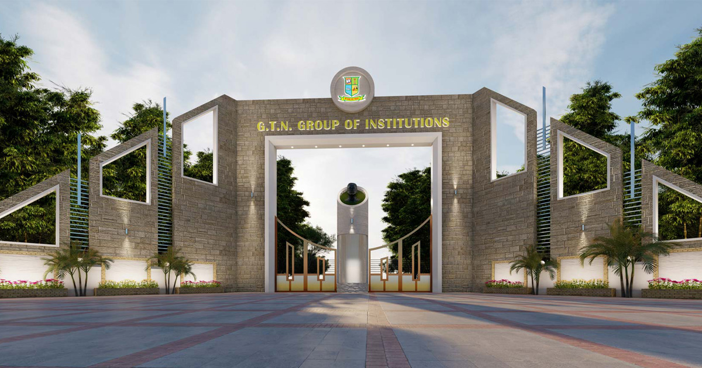

01
Responsible Innovation & Research
To educate and conduct impactful research by relevant computer applications education as well as equipping the students with the skills and knowledge.
Pioneering higher computational learning with academic rigor, cutting-edge software engineering paradigms, and ethical responsibility at G.T.N. Arts College.
Students gain expertise in areas such as data structures, database management, software engineering and network technologies, supplemented by specialized electives in emerging fields like AI, machine learning, and cyber security.
Hands-on learning is emphasized through labs, projects, and internships utilizing state-of-the-art facilities. Experienced faculty with rich teaching and research acumen provide mentorship and guidance.
Strong industry ties offer networking opportunities and career prospects, preparing graduates for diverse roles in the IT sector and thereby ensuring that the department remains at the forefront of computer applications education.

Three foundational commitments guiding every classroom lecture, laboratory experiment, and research interaction.
To educate and conduct impactful research by relevant computer applications education as well as equipping the students with the skills and knowledge.
To cultivate computer applications professionals who leverage technology to address global challenges and build a sustainable future.
To empower students to become innovative leaders in computer applications thereby combining technical excellence with a commitment to adopt responsible technology practices.
The fundamental standards embedded throughout the MCA experience.
Rigorous autonomous curriculum continuously evaluated to mirror modern industry demands.
Bridging theoretical computational concepts with tangible, production-ready coding implementations.
Encouraging student hackathons, system redesigns, and exploratory software development.
Fostering inquiry-led investigation, conference publications, and technical literature review.
Instilling values of privacy, cyber safety, data ethics, and environmentally sustainable IT.
Mentorship and professional skill building to ensure immediate effectiveness in enterprise software roles.
Modern infrastructure purposefully arranged to support immersive postgraduate technical learning.
Workstations equipped with modern developer tooling, virtualization stacks, and compiler suites.
Dedicated gigabit fiber-optic connectivity and secure departmental wireless access for academic research.
Access to seminal computing texts, IEEE/ACM digital resources, and specialized research journals.
Equipped with interactive projection and video conferencing facilities for hybrid guest lectures.
Learn more about our 10 Core Areas of Study or view the academic profiles of our dedicated faculty.